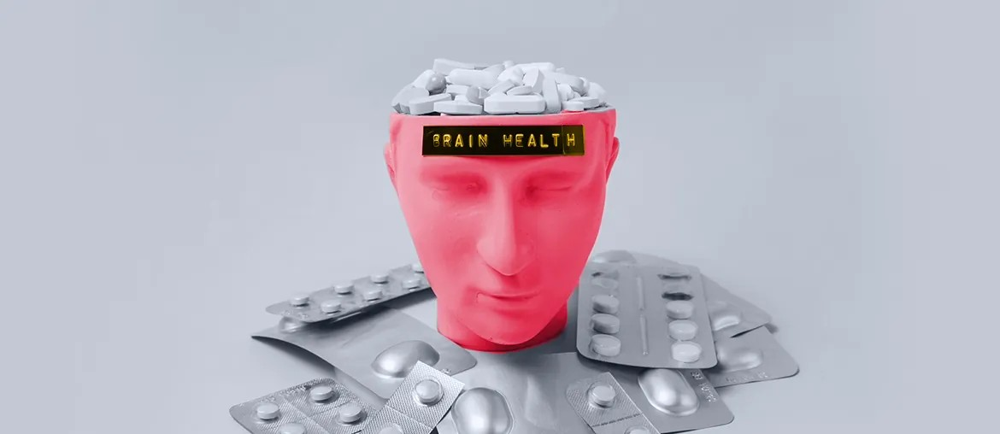

Medical diagnosis system for European clinics
Healthcare platform work with Symfony, PHP, Vue, MySQL, REST and encrypted data for mental health clinics.
Read the case studyNourish Care x Elinext
Nourish already gives carers one place to plan, record and coordinate care. The next hard step is keeping that ecosystem fast, safe and easy as products connect.
Why we're here: we saw the API-focused Tech Lead role. It names PHP, Go, Vue, AWS and Kubernetes. We can support the team while the search runs. Nourish engineering still keeps control.
The Tech Lead role says Nourish is scaling an API-first platform. This is not a simple vacancy. It puts delivery, API standards, legacy Drupal work and release quality together. Mobile care delivery, handovers and integrations may wait while the permanent lead is found. A small senior squad can protect momentum without changing who owns architecture.
Start with a six-week pilot. Keep planning, code review and product calls inside Nourish.
Map the workTrace API boundaries, legacy Drupal flows and high-risk sync paths with Jamie's team before adding code.
Build the slicesAdd senior backend capacity for Symfony and Go services, with Nourish leads owning the key decisions.
Guard each releaseRaise test checks around permissions, sync, offline notes and API contracts before every weekly demo.
Hand over cleanlyLeave runbooks, decision notes and backlog slices for your permanent Tech Lead when hired later.
Elinext is a full-cycle software development company. Since 1997, we have grown to about 700 in-house specialists. We do not use freelancers or subcontractors. For Nourish, the fit is regulated healthcare software and long-term team extension. Our teams cover PHP, Java, .NET, Node.js, mobile, QA and DevOps. We hold ISO 9001 and ISO 27001. This matters when care data and release quality are tied together. Named customers include Siemens, Broadcom, Volkswagen, TRUMPF and TUI. The same model adds senior hands to API work. Your product leaders still keep the roadmap.

Healthcare platform work with Symfony, PHP, Vue, MySQL, REST and encrypted data for mental health clinics.
Read the case study
Long-term outstaffing for a healthcare platform, including new features, certification work and third-party integrations.
Read the case study